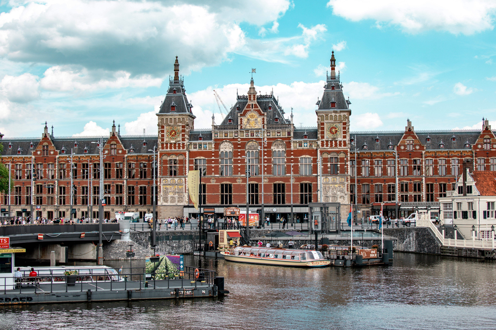
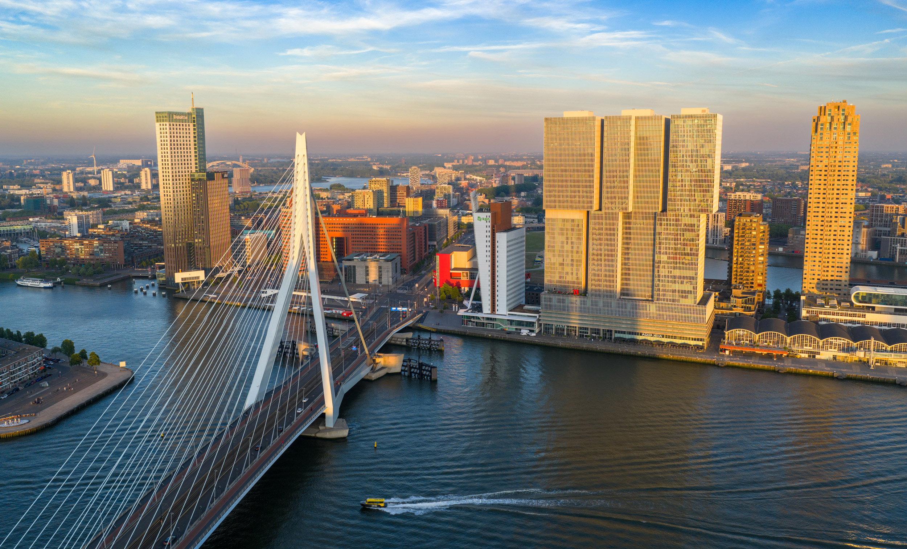

Tempat Tempat Iconic Yang Berada Di Belanda
ditulis oleh M Rafi Akbar . Pada 29 November 2025
Belanda terkenal dengan pemandangan alamnya yang indah, seperti ladang bunga tulip, kincir angin, dan kanal-kanal di Amsterdam. Negara ini juga dikenal bersih, tertib, dan ramah terhadap pesepeda, menjadikannya salah satu negara paling indah dan nyaman di dunia.

Contoh nya Amsterdam Central Stasion: Merupakan bagian Bangunan iconic di Negara Belanda dan juga Amsterdam Central Stasion Terletak dii jantung kota dan digunakan oleh masyarakat belanda maupun turis

Taman Bunga Belanda Yang Paling terkenal adalah Keukenhof: yang di bangun pada tahun 1949 oleh konsorsium petani untuk memarekan produk mereka. lokasi ini dulu nya adalah perkebunan kastil keukenhof, yang namanya berasal dari masa abad ke 15 ketika Countess Jacoba van Beieren menggunakan area tersebut untuk mengumpulan rempah rempah untuk dapur kastil.sejak di buka pada tahun 1950, taman inni menjadi salah satu destinasi wisata bunga terpopuler di dunia.

Musem Van Gogh di Amsterdam Menyimpan koleksi karya: Vincent van gogh di dunia, menampilakan lebih dari 200 lukisan dan 500 gambar, termasuk mahakarya seperti Bunga Matahari dan Pemakan Kentang. Meseumyang dibuka pada tahun 1973 dan di kelola oleh yayasan Vincent van gogh ini menyajikan perjalanan kronologis kehidupan dan perkembangan artistik van gogh, lengkap dengan surat surat ny adan sejumlah karya seniman lainnya.

De Rotterdam Benteng Rotterdam di Makassar: indonesia yang dibangun pada abad ke 17 oleh kerajaan Gowa-Tallo dan kemudian menjadi markas VOC, serta kota Rotterdam di belanda yang didirikan pada abad ke 13 di tepi sungai Rotte. benteng ini menjadi saksi pusat perdagangan maritim terbesar di Eropa.

Forum Groni tampaknya merujuk pada Forum Groningen : sebuah pusat budaya dan hiburan multi fungsi yang berlokasi di Groningen belannda bukkan sebuah organisai sejarah dengan sejarah tradinsional